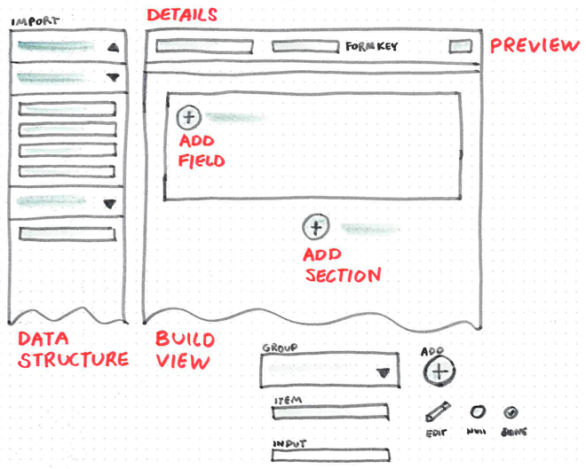
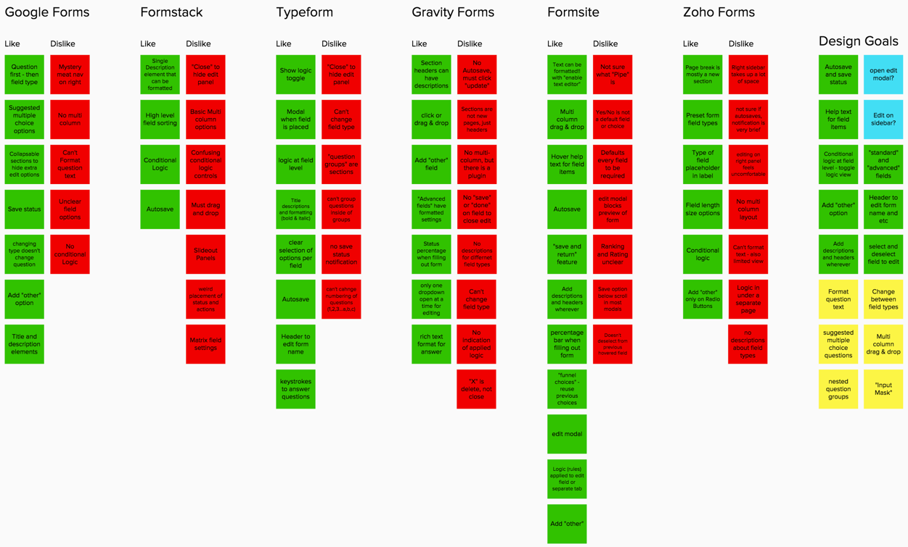

Form Builder
(InterSystems)
The form builder was a project that desperately needed some UX attention. Instead of cleaning up the original version, I decided to propose a new design. One of the main use cases is to allow hospitals generate their own questionnaires and assessment forms. I led the design on this project with the goal of creating a form builder for users health care needs with an easy and simple interface. There were also some advanced workflows we were trying to incorporate as well, such as connecting the forms to a data model and creating logic between fields and forms.
Redesign
The first version of the form builder was developed with a tight deadline. Because of this rush, there were a many areas of friction when creating a new form. The redesign of the Form Builder started with discovery, then research, design solutions, prototypes, and testing the designs before building the app. It was a lot easier to adapt the design to feedback and new solutions than rewrite code.
Competitive Analysis
To understand the basic workflows I explored 6 different form builders and tried creating questionnaires and assessment forms. By researching other builders I discovered a baseline for form builders. What are the features and how are they implemented in the design? How are these features labeled? I also took notes on what liked and disliked from the experience to establish design goals.
Prototyping
With inspiration from my research, I set out sketching ideas to wireframes. From mockups I built a clickable prototype using InVision. I had the MVP down pretty quickly, but this is a Healthcare form builder so there were still advanced features I had to consider.

Socializing
After working in a few of the advanced features I shared the prototype with the team for their feedback. This project is currently still being socialized and tested, but I think the new app creates a better experience than the previous version in every aspect. I look forward to learning from users and the team on ways to make this form builder even better.